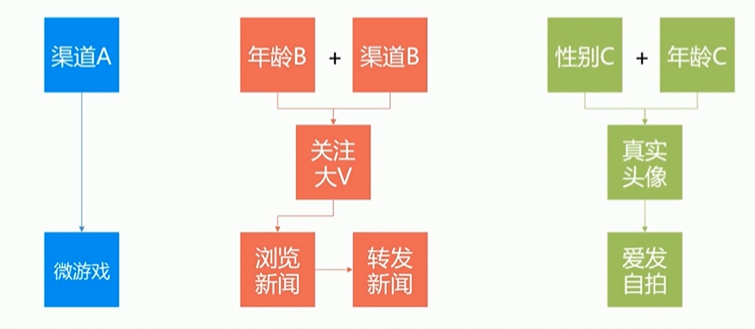
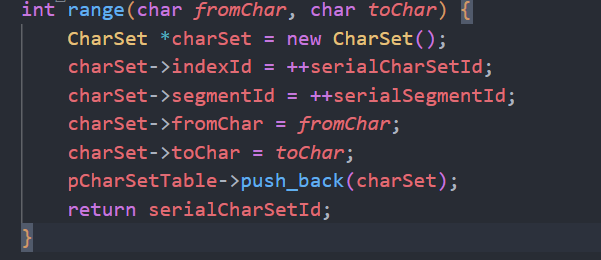
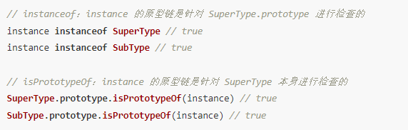
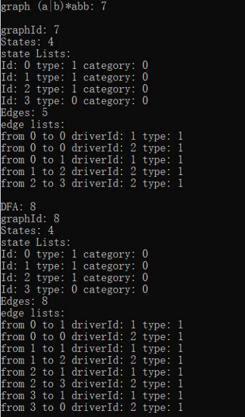

图片懒加载
1. 首先，将需要懒加载的图片的src属性保存在一个自定义的属性中，比如data-src。
2. 当页面加载完成时，获取所有需要懒加载的图片标签，并将它们的src属性设置为空字符串。
3. 监听页面的滚动事件，当滚动到需要懒加载的图片时，将保存在data-src属性中的图片地址赋值给图片的src属性，然后将data-src属性置为空字符串，这样就可以实现懒加载了。
在懒加载的实现中，有两个关键的数值：一个是**当前可视区域的高度**，另一个是**元素距离可视区域顶部的高度**。
// 注意我们并没有为它引入真实的src



